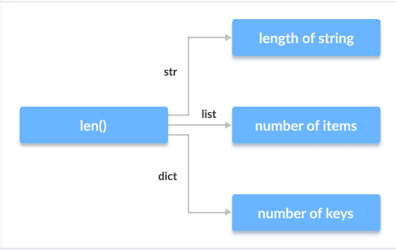
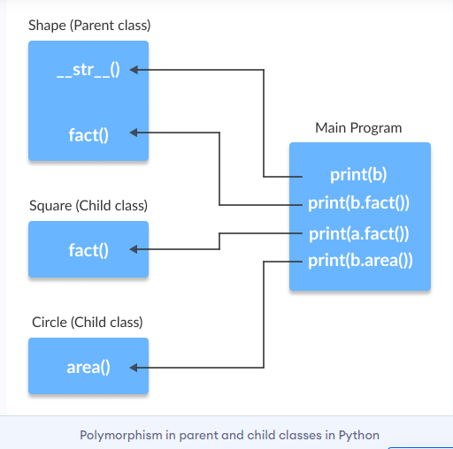

The literal meaning of polymorphism is the condition of occurrence in different forms.
Polymorphism is a very important concept in programming. It refers to the use of a single type entity (method, operator or object) to represent different types in different scenarios.
Let's take an example:
We know that the + operator is used extensively in Python programs. But, it does not have a single usage.
For integer data types, + operator is used to perform arithmetic addition operation.
num1 = 1
num2 = 2
print(num1+num2)
Hence, the above program outputs 3.
Similarly, for string data types, + operator is used to perform concatenation.
str1 = "Python"
str2 = "Programming"
print(str1+" "+str2)
As a result, the above program outputs Python Programming.
Here, we can see that a single operator + has been used to carry out different operations for distinct data types. This is one of the most simple occurrences of polymorphism in Python.
There are some functions in Python which are compatible to run with multiple data types.
One such function is the len() function. It can run with many data types in Python. Let's look at some example use cases of the function.
Example 2: Polymorphic len() functionprint(len("Programiz"))
print(len(["Python", "Java", "C"]))
print(len({"Name": "John", "Address": "Nepal"}))
Output
9
3
2
Here, we can see that many data types such as string, list, tuple, set, and dictionary can work with the len() function. However, we can see that it returns specific information about specific data types.
Polymorphism is a very important concept in Object-Oriented Programming
To learn more about OOP in Python, visit: Python Object-Oriented Programming
We can use the concept of polymorphism while creating class methods as Python allows different classes to have methods with the same name.
We can then later generalize calling these methods by disregarding the object we are working with. Let's look at an example:
Example 3: Polymorphism in Class Methodsclass Cat:
def __init__(self, name, age):
self.name = name
self.age = age
def info(self):
print(f"I am a cat. My name is {self.name}. I am {self.age} years old.")
def make_sound(self):
print("Meow")
class Dog:
def __init__(self, name, age):
self.name = name
self.age = age
def info(self):
print(f"I am a dog. My name is {self.name}. I am {self.age} years old.")
def make_sound(self):
print("Bark")
cat1 = Cat("Kitty", 2.5)
dog1 = Dog("Fluffy", 4)
for animal in (cat1, dog1):
animal.make_sound()
animal.info()
animal.make_sound()
Output
Meow
I am a cat. My name is Kitty. I am 2.5 years old.
Meow
Bark
I am a dog. My name is Fluffy. I am 4 years old.
Bark
Here, we have created two classes Cat and Dog. They share a similar structure and have the same method names info() and make_sound().
However, notice that we have not created a common superclass or linked the classes together in any way. Even then, we can pack these two different objects into a tuple and iterate through it using a common animal variable. It is possible due to polymorphism.
Like in other programming languages, the child classes in Python also inherit methods and attributes from the parent class. We can redefine certain methods and attributes specifically to fit the child class, which is known as Method Overriding
Polymorphism allows us to access these overridden methods and attributes that have the same name as the parent class.
Let's look at an example:
Example 4: Method Overridingfrom math import pi
class Shape:
def __init__(self, name):
self.name = name
def area(self):
pass
def fact(self):
return "I am a two-dimensional shape."
def __str__(self):
return self.name
class Square(Shape):
def __init__(self, length):
super().__init__("Square")
self.length = length
def area(self):
return self.length**2
def fact(self):
return "Squares have each angle equal to 90 degrees."
class Circle(Shape):
def __init__(self, radius):
super().__init__("Circle")
self.radius = radius
def area(self):
return pi*self.radius**2
a = Square(4)
b = Circle(7)
print(b)
print(b.fact())
print(a.fact())
print(b.area())
Circle
I am a two-dimensional shape.
Squares have each angle equal to 90 degrees.
153.93804002589985
Here, we can see that the methods such as __str__(), which have not been overridden in the child classes, are used from the parent class.
Due to polymorphism, the Python interpreter automatically recognizes that the fact() method for object a(Square class) is overridden. So, it uses the one defined in the child class.
On the other hand, since the fact() method for object b isn't overridden, it is used from the Parent Shape class.
Note: Method Overloading, a way to create multiple methods with the same name but different arguments, is not possible in Python.